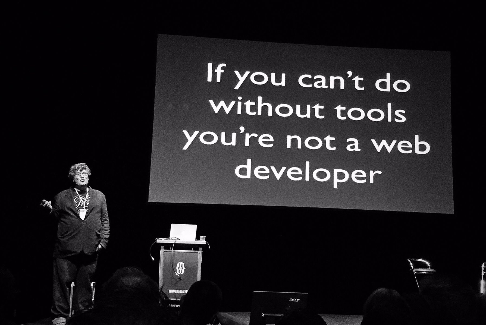

Why you would (not) want to
build your own static site generator
Event
Date
June 28, 2016
Agenda
viennahtml.github.io
Host
@viennahtml
Logo
Speaker
Name
Matthias Beitl
Website
css
ence
.com
Twitter
@
css
ence
Logo
1 / 5
>
Slides (Content)
This slide has no content. By design.
<
2 / 5
>

Peter-Paul Koch (@ppk)
at
cssday.nl,
2016
// Image by @cogo_digital —
twitter.com/cogo_digital/status/743401844303630336
<
3 / 5
>
Compilation of static site generators
//
www.staticgen.com
<
4 / 5
>
Why you would (not) want to
build your own static site generator
Tailor-made
Knowledge
↗
Collaboration
<
5 / 5
>